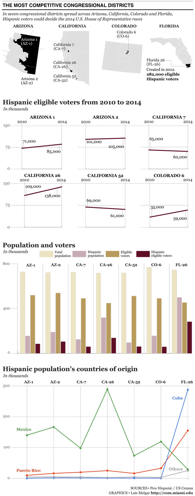

The most competitive congressional districts
As part of a graduate and undergraduate students team coordinated by professor Alberto Cairo, I created infographics related to 2014 Midterm elections for Univision News' website.
Software used: Numbers, Tableau, Illustrator